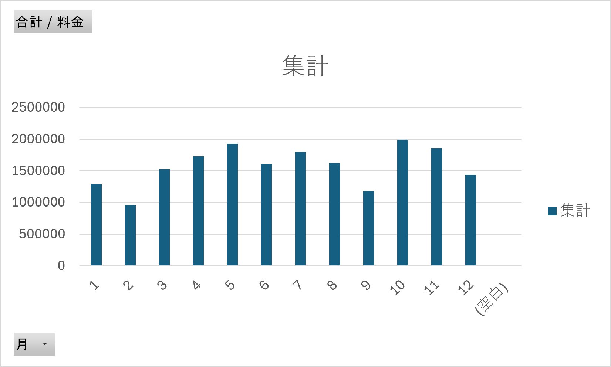
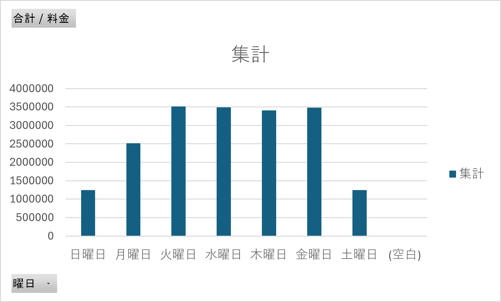
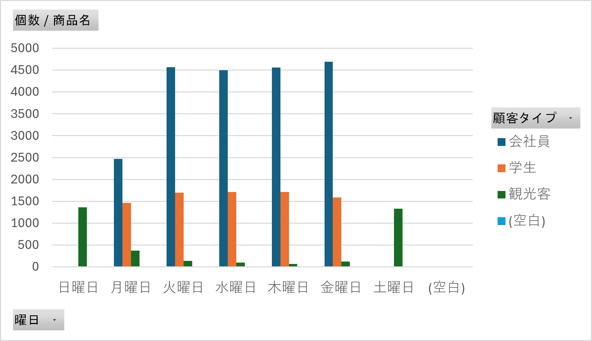

POSデータ分析
・お弁当屋さんの全体の売上は18897950円
・月全体の売上は2月と9月が少ない

・土日の全体のお弁当の売上数が平日に比べて少ない

- 12：00から12:40の間にたくさん売れている夕方17：30からもピーク
- みなとみらい海鮮弁当・横浜中華街弁当・崎陽軒シウマイ弁当・赤レンガ倉庫弁当など横浜にちなんだものは観光客しか買っていない。
- 売上個数は観光客は土日が多く、水曜日や木曜日などの週の真ん中は少ない。逆に会社員は土日の売上個数は少なく平日との差が激しい。

- 夏休みや冬休みなどの長期休みに入ると観光客の売上が増加し学生の売上が減少
- 会社員は野菜が入ったお弁当をよく買っている。学生は豚カツや牛丼などの肉系のお弁当を買っている。